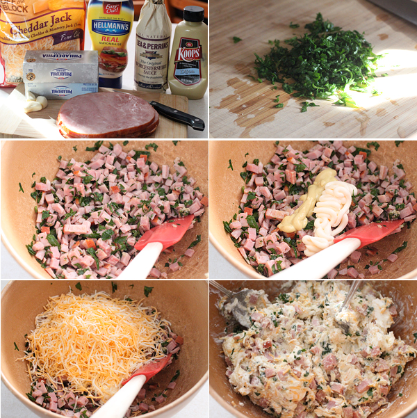

Piggly's Cheeball 4U

Piggly's Salty Cheeball 4U is perfect for special events and leftovers.
Ingredients:
- 2 8oz packages of Philadelphia cream cheese, room temperature
- 2 1 inch thick slices of cooked ham diced
- 2 tbs flat leaf parsley, chopped
- 3 cloves of garlic, minced
- 3 tbs mayonnaise
- 2 tbs dijon mustard
- 1 tbs worchestershire sauce
- 1 cup of shredded cheddar jack cheese
- 1 pinch of salt
- 1 pinch of cracked black pepper
- Pita chips or crackers
Instructions:
- Start by adding your ham, garlic, and parsley into a mixing bowl.
- Squeeze on the mayonnaise and mustard, along with the worchestershire sauce.
- Add in the cheeses, and with a couple of large spoons, begin mixing, incorporating everything together. Once everything is mixed really well, shape it into a ball and place on a serving plate.
- Place this in the refrigerator for at least one hour prior to serving.
- Enjoy!